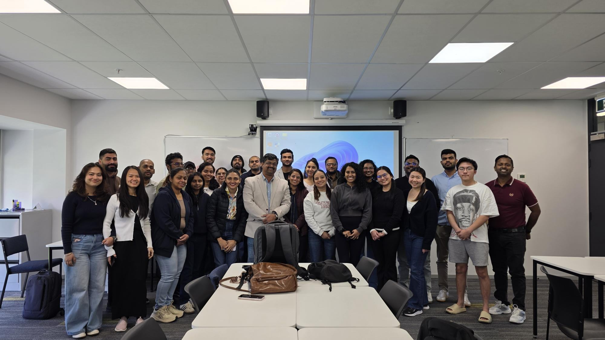

Dr Surej P John
Senior Lecturer in Marketing, School of Business, Eastern Institute of Technology, New Zealand
I research how technology, relationships and customer experience shape the choices people make, and I teach marketing that is grounded in evidence.

Marketing scholar, teacher and research supervisor
My work sits where marketing meets technology: how people adopt new tools, how AI changes service, and how organisations build lasting relationships with customers and students.
I hold a PhD in Information Technology and an MBA in Marketing, and I have taught at universities in New Zealand and Thailand since 2007. More than 50 master’s students have completed their research under my supervision.
- Australasian Journal of Information Systems
- FIIB Business Review
- Journal of Hospitality and Tourism Management
- FOCUS: Journal of International Business
- Annals of Tourism Research
- Tourism Management
- Current Issues in Tourism
- Australasian Marketing Journal
- Journal of Consumer Behaviour
- Journal of Hospitality and Tourism Technology
- Journal of Travel and Tourism Marketing
- Journal of Strategic Marketing
- Journal of Travel Research
- Anatolia
- International Journal of E-Commerce
Currently
What I am working on now.
- Dec 2026ANZMAC 2026, Auckland. Four research presentations with co-authors from three countries, and chairing two sessions. Conferences
- 2026Beyond Automation: How AI Capabilities Transform Customer Experience in Online Food Delivery Services. A new study funded by an EIT research grant. Research
- Sep 2026E-Commerce in the AI Era. International guest lecture for MBA students at Amity University Chhattisgarh, India. Speaking
- 2026Influencer marketing and tourist behaviour. A systematic literature review published in the International Journal of Tourism Research. Publications
Research
journal articles, book chapters and conference papers since 2012, across four connected themes.
Each square is one publication. Point to a square to see its title, or select it to open that theme.
Recent publications
How we can work together
Prospective students
Postgraduate courses in digital marketing, research methods and strategy, and supervision for master’s research projects.
TeachingResearch collaborators
Co-authoring on technology, customer experience and tourism, and support with structural equation modelling and systematic reviews.
ResearchIndustry partners
Workshops, talks and applied projects on information technology and digital strategy, customer experience and marketing for education providers.
Consulting & speaking